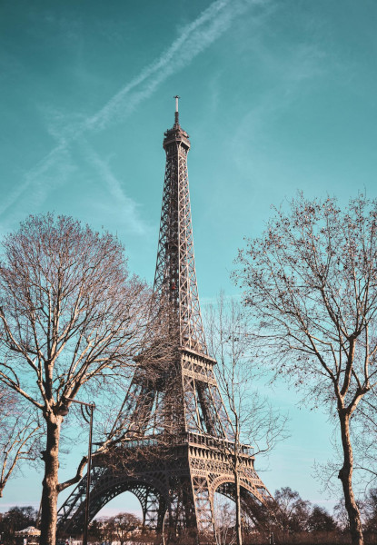
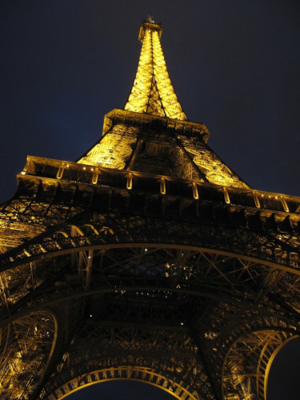
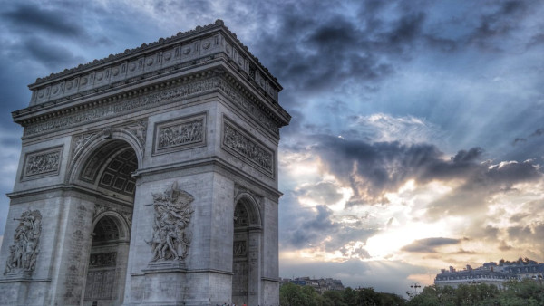
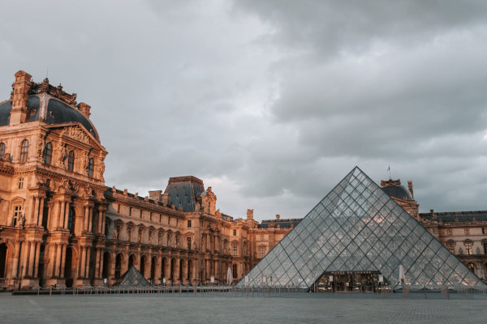
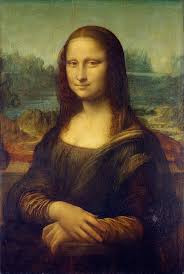

Torre Eiffel
A Torre Eiffel, construída para a Exposição Universal de 1889, é o símbolo mais reconhecido de Paris e uma das estruturas mais icônicas do mundo. A torre de ferro forjado se eleva a 324 metros de altura e inicialmente provocou controvérsias entre os parisienses. Muitos criticaram seu design industrial, que contrastava com a arquitetura tradicional da cidade. No entanto, ao longo do tempo, a Torre Eiffel conquistou o coração dos locais e visitantes, tornando-se um dos destinos turísticos mais populares do mundo, atraindo milhões de pessoas todos os anos.
A experiência de visitar a Torre Eiffel é única e inesquecível. Desde o momento em que os visitantes se aproximam da base, são impressionados pela grandiosidade da estrutura, projetada por Gustave Eiffel. A torre possui três níveis acessíveis ao público, cada um oferecendo vistas espetaculares da cidade. O primeiro e o segundo andares abrigam restaurantes, lojas de souvenirs e exposições que contam a história da torre e sua construção. No topo, o terceiro andar, os visitantes são recompensados com uma vista panorâmica de Paris que se estende por quilômetros, revelando as margens do rio Sena.
Além de ser uma atração turística durante o dia, a Torre Eiffel se transforma à noite em um espetáculo de luzes cintilantes que iluminam o céu parisiense. A cada hora, a torre brilha intensamente por cinco minutos, encantando todos que a observam. Este show de luzes, introduzido em 1985, reforça a reputação de Paris como "A Cidade das Luzes". Seja admirando sua arquitetura imponente, desfrutando das vistas inigualáveis ou simplesmente contemplando sua beleza iluminada, a Torre Eiffel oferece uma experiência que captura a essência mágica e romântica de Paris.
Arco do Triunfo
O Arco do Triunfo é um dos monumentos mais emblemáticos de Paris, situado no topo da famosa avenida Champs-Élysées. Inaugurado em 1836, o arco foi encomendado por Napoleão Bonaparte em 1806 para comemorar as vitórias militares de suas tropas. Inspirado nos arcos triunfais da Roma Antiga, o Arco do Triunfo é um símbolo poderoso do orgulho nacional francês. Suas paredes internas são gravadas com os nomes de batalhas e generais franceses, enquanto na parte inferior do arco, encontra-se o Túmulo do Soldado Desconhecido, um memorial para os soldados franceses mortos na Primeira Guerra Mundial.
O monumento oferece aos visitantes uma experiência rica em história e cultura. Subindo os 284 degraus até o topo, os visitantes são recompensados com uma vista panorâmica espetacular de Paris. Do alto do Arco do Triunfo, é possível observar a disposição radial das doze avenidas que irradiam a partir da Place de l'Étoile, que se estende em direção ao Louvre. Este ponto de observação também oferece vistas deslumbrantes de outros marcos parisienses, como a Torre Eiffel e a Basílica de Sacré-Cœur, tornando-o um dos melhores lugares para se apreciar a grandiosidade da cidade.
Além de ser uma atração turística, o Arco do Triunfo desempenha um papel significativo nas comemorações nacionais da França. Todos os anos, em 14 de julho, o Dia da Bastilha é celebrado com um desfile militar que passa pelo arco, reafirmando seu papel como um símbolo de união e resistência. Esta combinação de história, arquitetura e patriotismo faz do Arco do Triunfo uma parada essencial para qualquer visitante em Paris.
Museu do Louvre
O Museu do Louvre é o maior e um dos mais renomados museus de arte do mundo, situado no coração de Paris, às margens do Rio Sena. Originalmente construído como uma fortaleza no final do século XII, o Louvre foi convertido em um palácio real antes de se tornar um museu público em 1793, durante a Revolução Francesa. Sua famosa pirâmide de vidro, projetada pelo arquiteto I. M. Pei e inaugurada em 1989, serve como uma entrada moderna e contrastante para o antigo palácio, simbolizando a fusão da história e da modernidade que define o Louvre.
O acervo do Louvre é vasto e diversificado, abrangendo obras de arte e artefatos de todas as épocas e regiões do mundo. O museu é especialmente conhecido por abrigar algumas das obras mais célebres da história da arte, incluindo a enigmática Mona Lisa e a icônica escultura Vênus de Milo.
Além disso, o Louvre é o lar de uma impressionante coleção de antiguidades egípcias, artefatos islâmicos, e pinturas renascentistas. As exposições estão distribuídas em oito departamentos curatoriais, oferecendo aos visitantes uma jornada através das grandes civilizações e movimentos artísticos da humanidade.
Visitar o Museu do Louvre é uma experiência que vai além da simples admiração de obras de arte; é um mergulho profundo na história e na cultura global. Com mais de 35.000 obras em exibição e um ambiente arquitetônico que por si só é uma obra-prima, o Louvre exige tempo e atenção para ser verdadeiramente apreciado. Os visitantes podem passar horas explorando suas galerias labirínticas, descobrindo novos detalhes e significados em cada obra. Seja você um amante da arte ou alguém em busca de uma conexão mais profunda com a história, o Louvre oferece uma experiência cultural incomparável, refletindo a rica herança artística de Paris.